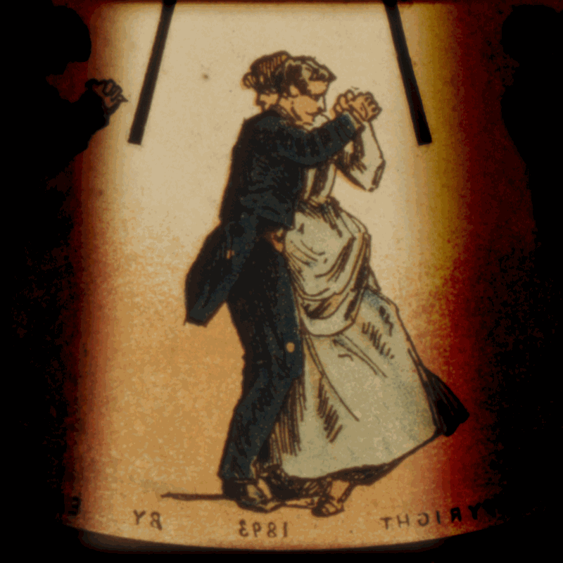

В средние века также находились умельцы, развлекавшие публику сеансами движущихся картинок при помощи оптических устройств наподобие фильмоскопов, куда вставляли прозрачные пластины с рисунками. Такие аппараты называли волшебным фонарем или по-латински "laterna magica". В 1646 г. монах-иезуит Атанасиус Киршер дал первое описание устройства сконструированного им "волшебного фонаря" - прибора, который высвечивал изображение на прозрачном стекле. С XVII века в бродячих театрах по всей Европе проводились такие представления.
Это один из первых проекторов: в деревянном или металлическом корпусе размещался источник света, а в специальное отверстие вставлялось изображение на стеклянной пластине. Позже конструкция была усовершенствована Этьеном Гаспаром Робертсоном: главной особенностью изобретенного им фантоскопа стала возможность показывать примитивную анимацию из нескольких кадров, сменявших друг друга. С помощью своего усовершенствованного волшебного фонаря он устраивал фантасмагорические шоу: в задымленных помещениях зрителям являлись призраки и скелеты, что изрядно пугало неподготовленных посетителей.
Следующим крупным шагом можно считать появление фенакистископа в 1828 году. Устройство состояло из диска с картинками, снабженного прорезями и зеркала: зритель смотрел через отверстия на отражающиеся изображения, что и создавало иллюзию движения за счет коротких промежутков между появлениями образов. Всего через пять лет Уильям Джозеф Горнер придумает новую конструкцию: вместо диска изображение наносится на внутреннюю поверхность цилиндра, что позволяло избавиться от использования зеркала.
Все в том же XIX веке фенакистископ породит еще несколько вариаций, в числе которых флипбук и праксиноскоп. Последний за счет хитрого применения зеркальной призмы дает ощущение более гладкой картинки. Эмиль Рейно довел устройство до ума: вместо привычного небольшого количества кадров он рисовал ленты на несколько сотен изображений, а праксиноскоп объединил с волшебным фонарем. По сути, именно он изобрел анимацию в привычном виде: на показах «светящихся пантомим» зрители наблюдали целые истории в музыкальном сопровождении (мелодия синхронизировалась с изображением), а длительность сеансов доходила до 20 минут.
Но в 1895 году мир узнает новое слово — «кинематограф», что положит конец экспериментам изобретателя: не в силах справиться с давлением нового медиума, который создавал движущуюся картинку с помощью кинокамеры, избавившись от ручного труда рисовальщика, Эмиль Рейно разбил свой аппарат и утопил его в реке вместе со всеми лентами. Лучшую работу, «Вокруг кабинки», частично смогли восстановить — и сейчас она также доступна для просмотра.
Первые мультфильмы представляли собой рисованные и раскрашенные от руки пантомимы продолжительностью вплоть до пятнадцати минут. Уже тогда могло применяться звуковое сопровождение, синхронизированное с изображением. Рейно создал также мультфильмы, в которых наряду с рисунками применялись фотографии. В дальнейшем вклад в развитие мультипликации вносили другие мультипликаторы, создавая картины в различных жанрах и техниках. Эксперименты с покадровой анимацией начались еще в 1899 году, а первый громкий успех пришел к Джеймсу Стюарту Блэктону и его «Отелю с призраками». В нем предметы двигались словно сами по себе, что сильно впечатлило как зрителей, так и киноделов, а также вдохновило последних на новые эксперименты.